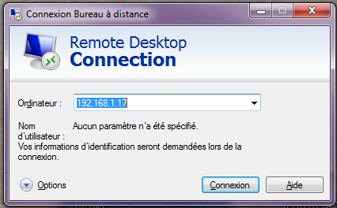
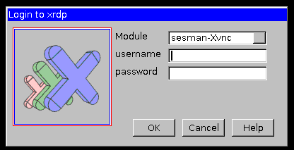

Tip of the week 15
Access to Linux desktop from Windows with mstsc
If you're working on Linux servers from Microsoft environment, you probably want to simply access to your servers desktop with RDP protocol thanks to mstsc. XRDP daemon is an open source RDP server, it uses vnc4server as backend.
Installation
On Debian based distributions
(Tested on Debian Squeeze) XRDP is in Debian main packages :
Natjohan# yum install xrdp
That's it, XRDP works out of the box ! Now you can launch your mstsc client.
On Fedora
(tested on Fedora 18)
Natjohan# yum install xrdp
Natjohan# systemctl enable xrdp.service
ln -s '/usr/lib/systemd/system/xrdp.service' '/etc/systemd/system/multi-user.target.wants/xrdp.service'
Natjohan# systemctl start xrdp.service
That's it !
Note : Don't forget to update your firewall rules to allow connexions on TCP port 3389
Comments